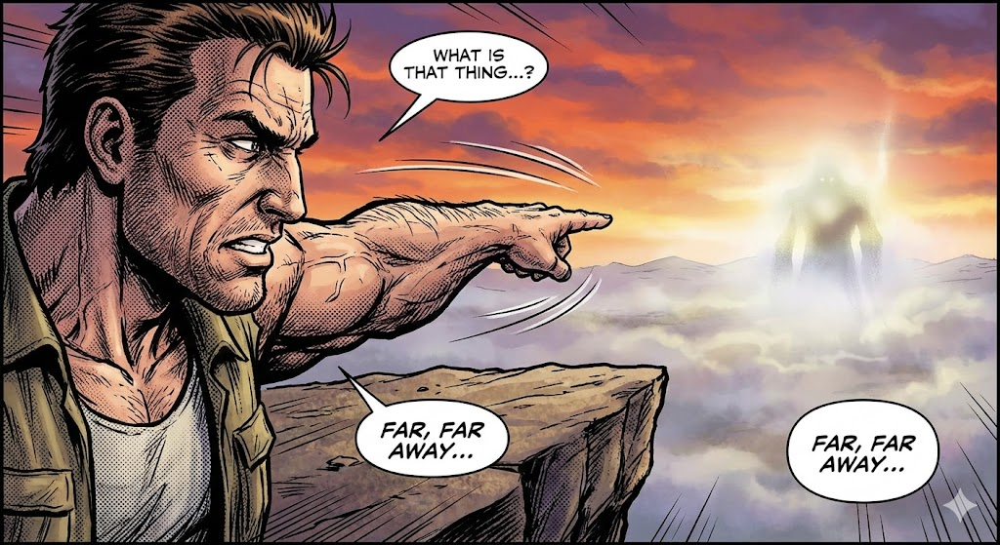
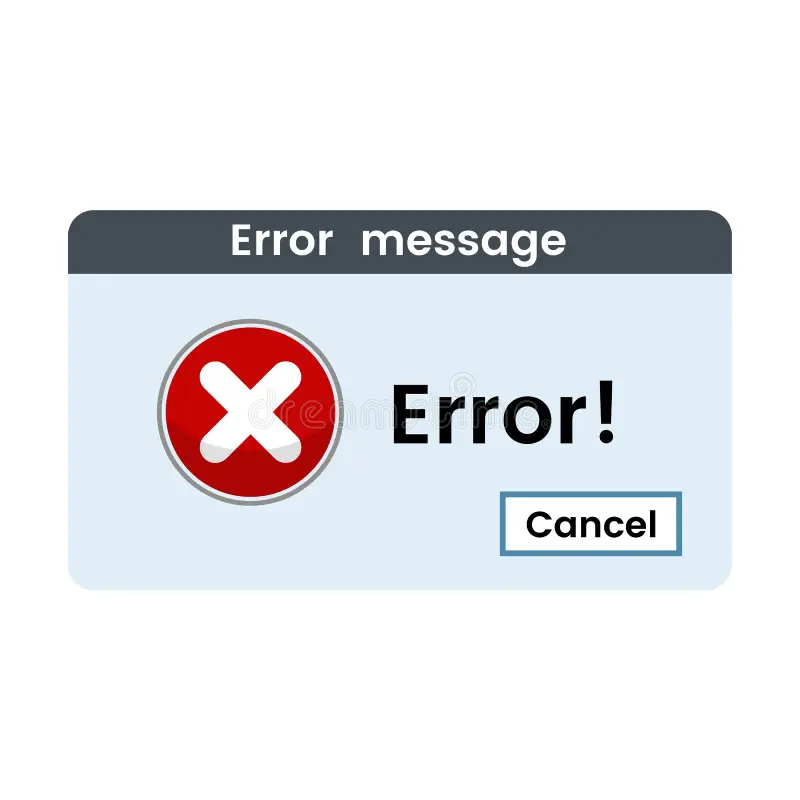
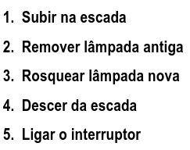
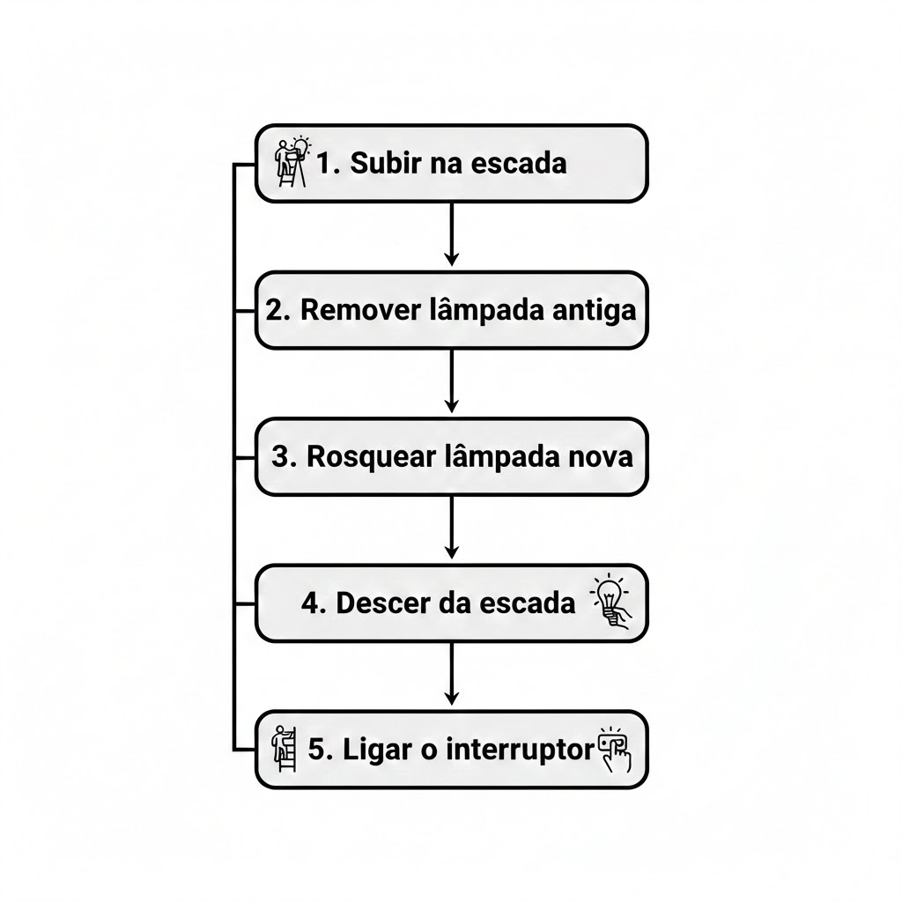
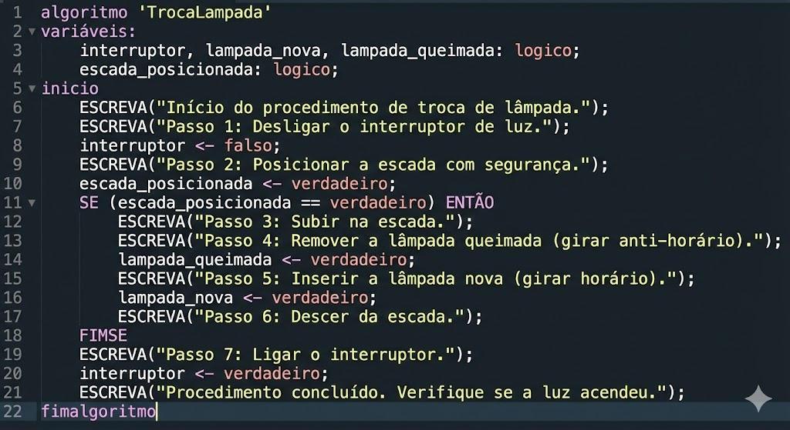
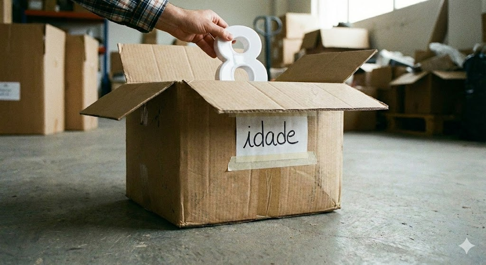

Lógica de Programação
Fundamentos e Algoritmos
Prof. William Paiva
O que é Lógica?
Não é só "coisa de computador"!
É a arte de pensar de forma organizada.
Sequência + Organização = Solução
O Algoritmo
Definição:
"Uma sequência finita de passos bem definidos para realizar uma tarefa."
Início
Passos
Fim
Algoritmo no Dia a Dia
Receita de Bolo:
- Quebre os ovos.
- Adicione a farinha.
- Misture bem.
- Coloque no forno.
- Espere 40 min.
- Retire do forno.
Vamos Trocar um Pneu?
(Use a seta → do teclado para avançar os passos)
Precisão é Tudo
Humano 🧑
"Pega aquele negócio lá."
Entende pelo contexto.
Computador 💻
Error 404: Object not found.
Precisa de instrução exata.
Formas de Representar
Narrativa
Português livre.
Fluxograma
Desenhos e setas.
Pseudocódigo
Português Estruturado.
Pseudocódigo: O Portugol
É uma linguagem intermediária entre a nossa fala e o código de verdade (C, Python, Java).
Tem regras rígidas:
- Tem começo e fim definidos.
- Usa comandos específicos (palavras-chave).
- Segue uma indentação (recuo) para organizar.
Guardando Valores: Variáveis
Para o computador lembrar de algo, precisamos criar uma Variável.
Pense numa caixa com uma etiqueta.
idade : inteiro
nome : caractere
O Comando de Atribuição (<-)
Como colocamos algo dentro da caixa?
Lê-se: "Recebe"
"A variável idade RECEBE o valor 25"
Conversando com o Usuário
Escreva
O computador mostra algo na tela.
Leia
O computador espera você digitar e guarda na variável.
A Estrutura do Algoritmo
Todo algoritmo precisa nascer e morrer.
(Declaração das caixas)
... comandos ...
Exemplo: Somar Dois Números
Var
n1, n2, res : inteiro
Inicio
Escreva("Digite N1: ")
Leia(n1)
Escreva("Digite N2: ")
Leia(n2)
res <- n1 + n2
Escreva("Soma: ", res)
FimAlgoritmo
O Fluxo dos Dados
ENTRADA
Leia(n1)
Leia(n2)
PROCESSAMENTO
res <- n1 + n2
SAÍDA
Escreva(res)
Hora de Praticar!
10 Exercícios para afiar a lógica.
Exercícios 1 a 3: Lógica do Dia a Dia
1. A Lâmpada Queimada
Escreva, em português (passo a passo narrativo), um algoritmo para trocar uma lâmpada queimada no teto de uma sala alta. Considere que você precisa buscar uma escada na despensa.
2. Sacar Dinheiro
Descreva a sequência lógica de passos para sacar dinheiro em um caixa eletrônico. Detalhe a entrada do cartão, senha, valor e retirada do dinheiro.
3. O Sanduíche
Liste a ordem lógica para preparar um sanduíche simples. Considere que os ingredientes estão na geladeira e precisam ser pegos.
Exercícios 4 a 6: Desafios de Raciocínio
4. O Lobo, a Cabra e o Repolho
Um fazendeiro deve atravessar um rio com um lobo, uma cabra e um repolho. O barco só leva ele e mais um. O lobo come cabra se ficarem sozinhos juntos. Se a cabra ficar com o repolho, ela o come. Qual a sequência de viagens?
5. Complete a Sequência
Descubra a lógica e o próximo número:
a) 2, 4, 6, 8, ___
b) 1, 1, 2, 3, 5, 8, ___ (Fibonacci)
c) 10, 20, 40, 80, ___
6. Troca de Copos (Variável Auxiliar)
Você tem um copo com suco A e um copo com suco B. Como trocar os líquidos de lugar (o suco A ir para o copo B e vice-versa)? Dica: Você pode usar um terceiro copo vazio.
Exercícios 7 a 9: Introdução Técnica
Vamos tentar criar programas. Para mostrar algo na tela use: escreva("algo"). Para pedir um valor do usuário, use: variavel = leia(). Para guardar um valor, use nome=valor, onde você define um nome para cada coisa que quer guardar. Quando houver uma decisão, descreva, por exemplo: Se idade for maior que 10, escreva("adolescente"). Senão, escreva("criança").
7. Teste de Mesa
Simule a memória do computador. Qual o valor final de todas as variáveis envolvidas?
A = 10
B = 5
C = A + B
X = C x 2
8. Desenhando o Fluxo
Desenhe no caderno um fluxograma que lê a idade de uma pessoa e decide: Se idade >= 18, imprime "Maior". Se não, imprime "Menor".
9. Média de 3 Números
Se você tivesse que montar um app que calcula a média de 3 números, como você faria isso? De que forma pediria os valores ao usuário , armazenaria os valores e faria os cálculos? Pense nisso e monte um código, conforme descrito acima.
10. Cálculo de Combustível
Escreva o Pseudocódigo para o seguinte problema:
Um motorista quer saber quanto vai gastar para encher o tanque. Crie uma sequência lógica de passos para que você informe isso a ele.